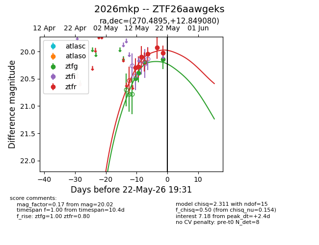
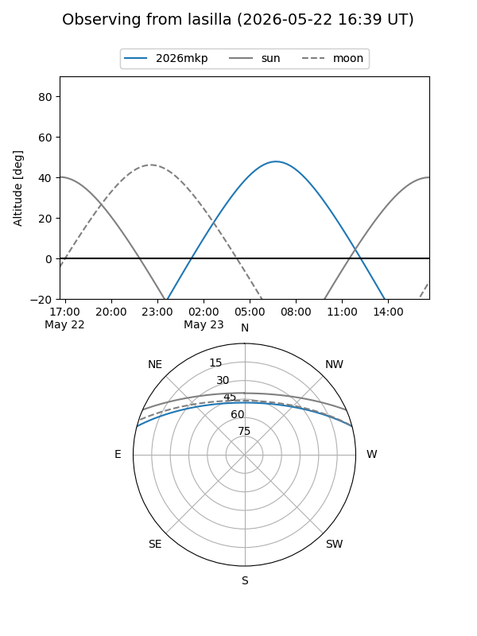
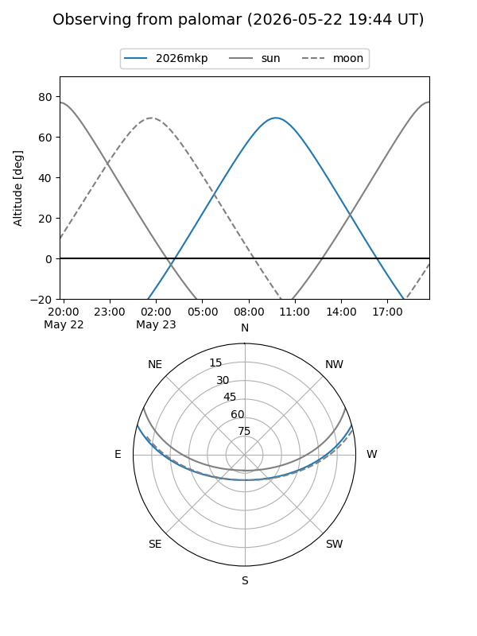
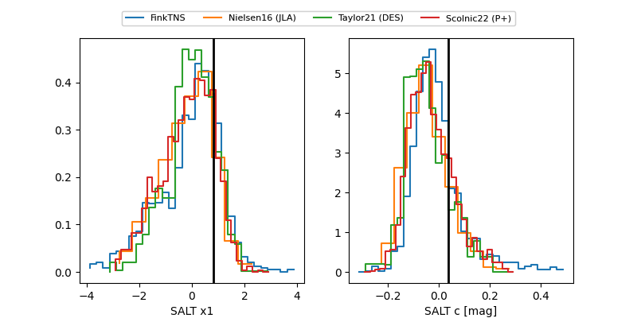

2026mkp
Target 2026mkp at 2026-05-22 19:33
Aliases and brokers:
lsst-FINK: link
lsst-Lasair: link
lsst-ALeRCE: link
ztf-FINK: link
ztf-Lasair: link
ztf-ALeRCE: link
TNS: link
YSE: link
alt names
ZTF26aawgeks (ztf,fink_ztf)
2026mkp (tns,yse)
Coordinates:
equatorial (ra, dec) = 270.4895,+12.84908
equatorial (HMS+DMS) = 18:01:57.49,+12:50:56.69
galactic (l, b) = (39.0860,+16.69548)
Flags:
Photometry:
last ztfg=20.14, ztfr=20.02
4 ztfg, 6 ztfr detections
Lightcurve

Visibility


Additional plots
